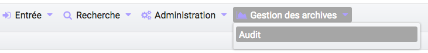
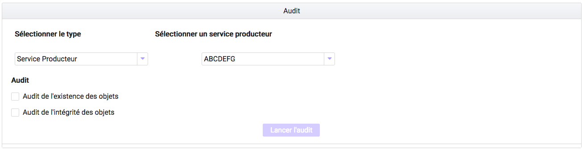

Gestion des archives existantes¶
Cette partie décrit le fonctionnement du processus d’audit dans la solution logicielle Vitam. L’audit est une action d’évaluation, de vérification, contrôle et correction permettant de s’assurer que l’état de la plateforme est toujours conforme à ses exigences de qualitées et de sécuritées.
Lancement d’un audit de l’existence des objets¶
Un audit de l’existence des objets se lance sur un service producteur ou sur un tenant. Il permet de vérifier que, pour chaque objet du tenant choisi ou chaque objet appartenant à ce service producteur :
- Il n’y a pas d’incohérence sur la stratégie de stockage. L’audit vérifie que la liste des offres de stockage définies dans le groupe d’objets est bien la même que celle définie dans la stratégie de stockage
- Tous les objets ont leurs copies. L’audit vérifie que toutes les fichiers correspondant aux objets existent sur les offres déclarées, dans un nombre de copie spécifiée par la stratégie de stockage
L’audit de l’existence des objets se lance depuis le menu “Gestion des archives”
Pour débuter l’audit, il suffit de sélectionner comme type “tenant” ou “Service producteur”. L’audit du tenant prend automatiquement comme valeur le tenant en cours, celui du service producteur demande de sélectionner un service producteur dans la liste. Cette liste est construite à partir des services producteurs déjà existant dans la solution logicielle Vitam.
Il faut ensuite cocher l’audit désiré, ici “Audit de l’existence des objets”, et de cliquer sur le bouton “Lancer l’audit”. Un message de confirmation apparaît pour notifier du lancement du processus.
L’avancement de l’audit, comme pour toutes les opérations, peut se suivre dans l’écran du suivi des opérations.
Lancement d’un audit de l’intégrité des objets¶
L’audit de l’intégrité des objets est un contrôle additionnel de l’audit de l’existence des objets. Il permet de vérifier que, pour chaque objet du tenant choisi ou chaque objet appartenant à ce service producteur, ces objets n’ont pas été altérés à l’insu de la solution logicielle Vitam.
Pour entrer dans le détail de cette vérification, l’audit vérifie pour chaque objet audité, l’empreinte de cet objet enregistrée dans la base de données est toujours la même que l’empreinte calculée par l’offre de stockage. Pour entrer dans le détail, l’empreinte d’un objet est une représentation mathématique considérée unique par objet. Si l’objet est modifié d’une quelconque manière que ce soit, son empreinte change de manière radicale.
L’audit de l’existence des objets se lance depuis le menu “Gestion des archives”, sur le même mode que l’audit de l’existence des objets, en cochant la case “Audit de l’intégrité des objets”. Etant donné qu’il s’agit d’un contrôle additionnel, il est impossible dans l’IHM de lancer l’audit de l’intégrité des objets sans lancer l’audit de l’existence des objets : la case de ce dernier se cochant automatiquement si cela n’était pas déjà fait.
L’avancement de l’audit, comme pour toutes les opérations, peut se suivre dans l’écran du suivi des opérations.
Journal des opérations d’entrée¶
Le résultat de l’audit est disponible dans le journal des opérations. De plus, l’audit génère un rapport, disponible dans la colonne “Rapport”, sélectionnable dans le menu “informations complémentaires”. Ce rapport détaille l’état de la plateforme vis à vis de son audit : tout d’abord en listant l’ensemble des opérations ayant versées un groupe d’objet ayant été audité (en succès ou échec), puis l’ensemble des objets pour lesquels l’audit a rencontré un échec. La structure de ce rapport est explicité dans le document modèle de données, alors que les différents statuts possibles sont décrits dans la documentation du workflow d’audit.
Ce rapport est formaté de telle manière à faciliter son intégration dans des systèmes d’informations, il n’a pas pour objet principal d’être lu par un humain tel quel, même si cela reste possible.